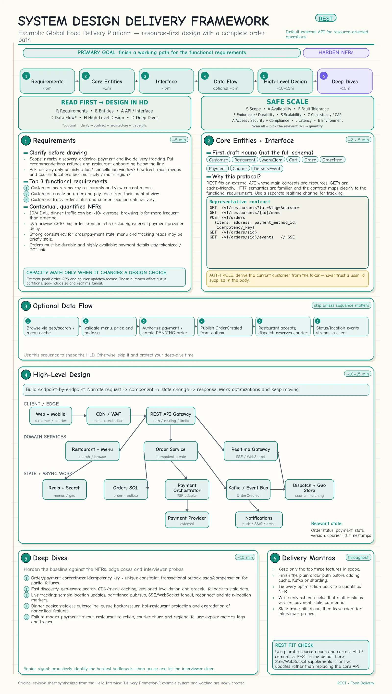
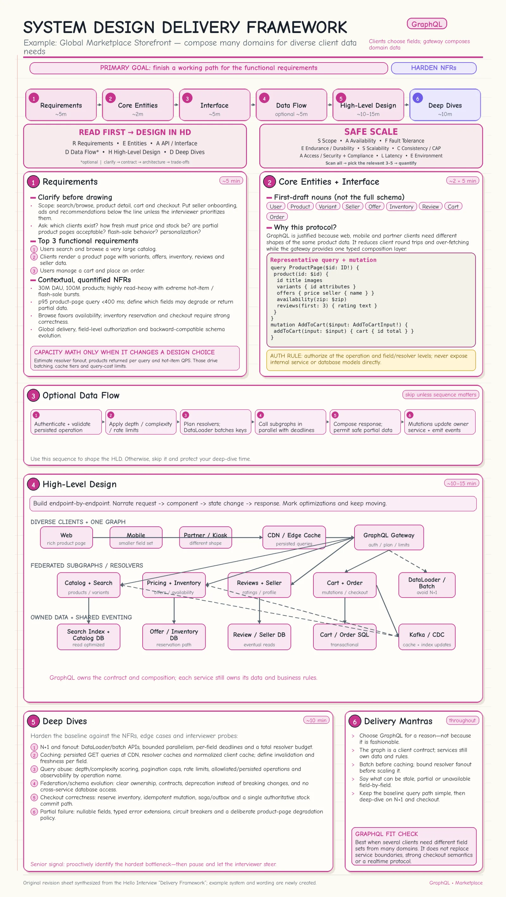
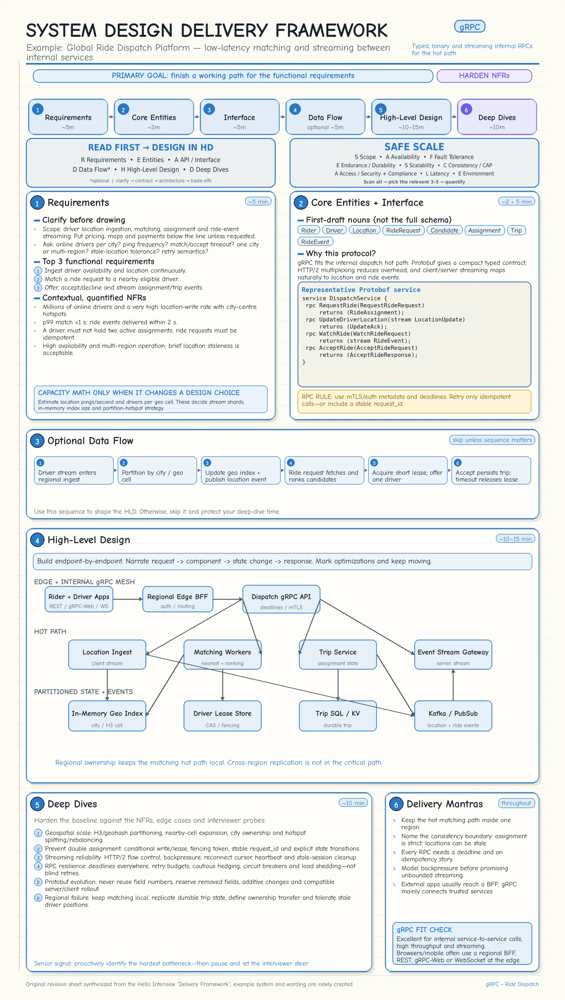

Topic · System Design Delivery Framework
READ → HD Framework
A fixed interview sequence that manages time and delivers a working end-to-end system before any optimization.
Cheat sheets
READ → HD and SAFE SCALE applied to three systems (tap for full size).






Quick Revision
- READ → HD: Requirements (~5m) → Entities (~2m) → API (~5m) → Data flow* (~5m) → High-level design (~10-15m) → Deep dives (~10m). *optional
- Agree the top 3 functional and only the 3-5 non-functional requirements that matter; quantify them.
- SAFE SCALE for NFRs: Scope, Availability, Fault tolerance, Endurance/durability, Scalability, Consistency/CAP, Access/compliance, Latency, Environment.
- Estimate only when the number changes a design decision.
- HLD: simplest complete system first, one requirement/endpoint at a time; narrate every state change.
- Deep dives: harden for bottlenecks, contention, consistency, recovery, scale, latency, security, cost.
Step-by-step questions
- Requirements - primary actors, top three user journeys, scale, consistency, latency targets, durability, security, acceptable failure behavior.
- Estimation - which number could invalidate the simple design?
- Entities and API - the resources exchanged and persisted; derive APIs directly from the functional requirements.
- High-level design - can every core request be traced through
Client → Gateway → Service → Cache/DB/Queue → Response? Add only what each flow needs. - Deep dives - where will it break first? Pick 2-3 system-specific risks: inventory contention, GraphQL fan-out, courier matching, cache failure, DB hotspots, retry storms.
Average QPS = daily operations ÷ 86,400 Peak QPS = average QPS × peak factor Storage = writes/day × record size × retention × replication Bandwidth = requests/s × average payload size
Protocol choice: see REST vs GraphQL vs gRPC.
Trade-offs
| Choice | Benefit | Cost / risk |
|---|---|---|
| Estimate only when needed | Saves time; calculations stay decision-oriented | Capacity constraints missed if skipped blindly |
| Simple HLD before optimization | Complete answer; exposes real bottlenecks | First design may be intentionally inefficient |
| Strong consistency for inventory/payment | No overselling, double booking, or conflicting money state | Higher latency, lower availability during failures |
| Queues for multi-step workflows | Decoupling, spike absorption, retries | Eventual consistency, duplicates, operational complexity |
Failure modes
- Scope keeps expanding - freeze the top three functional requirements; move extras below the line.
- Too many generic NFRs - scan SAFE SCALE, pick the relevant 3-5, attach measurable targets.
- Time lost to arithmetic - state assumptions; estimate only where it changes partitioning, storage, or capacity.
- Incomplete design from early complexity - finish one request path before queues, caches, replicas, sharding.
- Duplicate order/payment on retry - idempotency key, unique constraint, atomic state transition, transactional outbox.
- Partial failure in a workflow - persisted state machine or saga, retryable steps, compensating actions.
- Cache outage or stampede - bounded L1 cache, DB fallback, request coalescing, TTL jitter, rate limiting, load shedding.
- Two couriers get the same delivery - atomic conditional assignment, short lease, fencing token, idempotent acceptance.
- Stale driver location - version every update, reject older writes, expire inactive locations, split current location from history.
Interview practice
Answer aloud, then reveal.
Moody's (2026): inventory and pricing service - read-heavy, consistency vs availability, authorization, simultaneous purchases.
GraphQL/REST for reads, authenticated mutations for price/stock, SQL transactions or conditional writes for inventory, Redis for hot reads, outbox/event stream to search and analytics. Consistency first for stock mutations.
Moody's (2026): the whole Redis cluster fails, or hundreds buy the same product at once?
Fall back via a small bounded L1 cache to the DB with rate limiting and circuit breaking. Prevent overselling with an atomic conditional decrement or transaction, reservation expiry, and idempotent order creation.
Microsoft SDE2 (2026): Teams messaging - WebSockets vs long polling, 10K+ groups, partitioned history, ordering.
WebSockets via connection gateways, partition by conversation_id, append-oriented store, per-conversation sequence numbers, reconnect from last acknowledged sequence.
Meta / Amazon: food delivery like Uber Eats at 100M DAU.
REST for customer/restaurant APIs, event-driven order state machine, SQL for orders/payments, outbox + queue for notifications and dispatch, geo index for nearby couriers, WebSocket/SSE tracking.
Salesforce (2025): marketplace/property platform - no double booking, search < 500 ms, global photos, bulk updates.
Reserve with a short TTL, confirm after payment with an atomic condition, feed Elasticsearch via CDC/outbox, photos in object storage + CDN, bulk updates as idempotent async jobs.
Uber: driver location every 3 s for 100K trips + 30 days of history.
Client-streaming gRPC or batched HTTP writes; append-heavy time-series/wide-column store partitioned by driver/trip + time bucket; TTL/tiering; separate geo index for latest locations only.